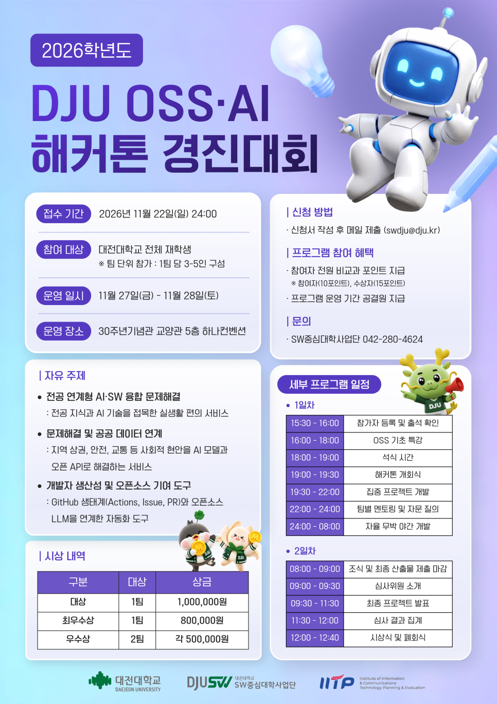

DAEJEON UNIVERSITY · AI & OPEN SOURCE
2026 · 참가 안내2026 DJU OSS·AI 해커톤 경진대회
AI와 오픈소스를 활용해 문제를 해결하고, 프로젝트 결과물을 GitHub 공개 저장소로 공유하는 해커톤입니다.
행사 2026.11.27.(금) ~ 11.28.(토) · 무박 2일 · 접수 2026.11.22.(일) 24:00까지


포스터 크게 보기 ↗EVENTS BY YEAR
경진대회·해커톤 안내
연도별 행사와 참가 안내를 한곳에서 확인하세요.
PROJECT SHOWCASE
도전이 남긴 결과물
공개된 프로젝트의 코드, 발표 자료와 시연을 살펴보세요.
팀 결과물 제출
2일차 11월 28일(토) 08:00~09:00에 최종 산출물을 제출합니다.
- 팀 공개 저장소 준비
README에 작품 소개와 실행 방법을 쓰고 계획서·코드·최종 보고서·발표·시연 링크를 연결합니다.
- 저장소 주소 제출
대회 현장 안내에 따라 팀 저장소 주소를 제출합니다.
- 연도별 작품 목록 등록
사업단 담당자가 공개 가능한 자료를 확인한 뒤 작품 목록에 링크를 등록합니다.